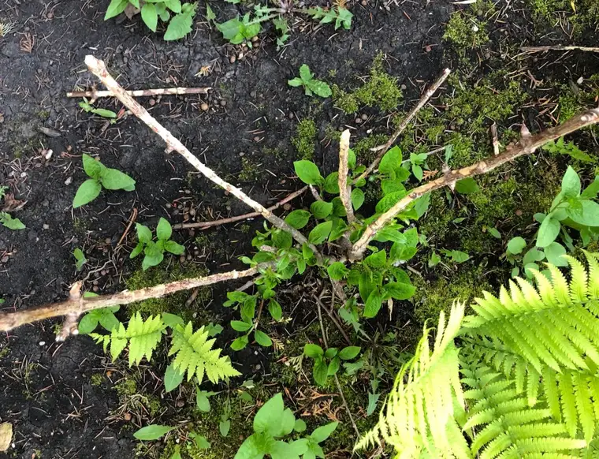
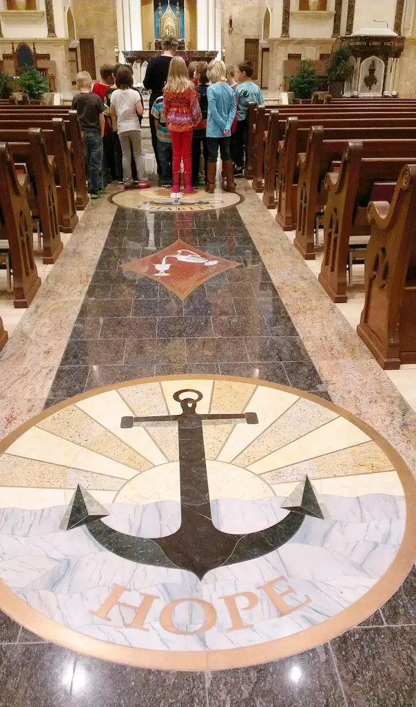
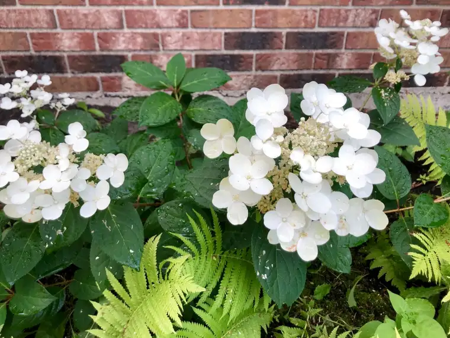

I love pretty things — flowers, sunsets, and fall-dressed trees. But in the years of raising little ones, our yard took a back burner, despite some neighbors’ immaculate floral displays (yes, even labels in one yard indicating the name of the flower, plant or bush).
A few years ago, I knew it was time to start beautifying our yard, but where to begin? I mentioned wanting a “Mary Garden” on Facebook, and a friend who was studying to be a master gardener volunteered to come over and plot out a starting point. I now have a pretty welcoming spot in the entryway, on the side of our home, that’s become a refuge in warmer weather, offering me a place for rest after a long walk, and refreshment to my soul.
During this same time, around the corner from my Mary Garden, my friend added a hydrangea plant to a spot that is mostly shaded. Though it was filled with ferns and evergreens, some open spots remained. I knew the plant would need some babying before becoming fully established, so I tried to be especially attentive to it.
Unfortunately, the area is also home to a family of rabbits, and this year, when I went to check on my hydrangea in the spring, I was shocked and saddened by what I found.

Yes, it had been a horrendous, bitterly cold winter, but where was my hydrangea? It had been replaced by sticks! You could see the teeth marks where rabbits had chewed the plant down to nubby rods. My heart sank.
Bereft, I went to a nursery and invested in another hydrangea, saddened that the original one seemed wrecked by the elements and a few hungry hoppers. Lacking a green thumb, I didn’t know what I was doing, but came home with a beautiful hot-pink plant, situated it in the dark soil surrounding, and near, the dying plant, and prayed.
Meanwhile, I shared the photo of my forlorn stick-plant on Facebook. Someone commented that they saw some green there at the base, indicting it might not be finished off just yet. Revival seemed possible. Maybe, I thought, but it didn’t seem like great odds to me.
I went about watering the area, but mostly tending to the new hydrangea. And then, for several weeks, we were either gone or very busy, and I was unable to respond to that area at all.
Imagine then my surprise when I was finally able to return to find this.

Mind you, this is NOT the new hydrangea, but the old one! I was once again stunned and shocked, this time because of the obvious and incredible resurrection of the “dead” plant. My eaten up, beaten up hydrangea had come back to life! I couldn’t help but recall Jesus’ Resurrection in that moment. Like the apostles, I had written off hope. I didn’t believe it possible there could be a rising of new life; not with what I had witnessed, the badly bruised and battered. I was too attached to what my eyes were seeing, not the invisible reality which had been hinted at but dismissed by my doubting heart.
Sometimes, it’s just too hard to hope. Sometimes, I just don’t want to set myself up for more disappointment. It’s easier somehow to just assume the worst and plod forward from there.
But when I saw those beautiful blossoms against all odds, and the hopeful leaves springing up in all their greenery alongside them, my heart swelled with happiness and my soul danced with delight! Even as I celebrated this beautiful resurgence, though, I felt ashamed, because I had doubted. I had walked away from hope, assuming it wasn’t possible. How short-sighted I had been.
And I quickly saw the other parallels — all those times I have doubted God, only to be surprised with delight at the new life he brings, over and over. It is absolutely miraculous what He can do, and does, every day. He wants to delight and surprise us. He waits for those chances! But we often have to be patient. We have to wait, believing without seeing. That is what hope is.
Recently, I read something in my “Magnificat” that resonated with me, and connected with this same theme of hope:
“The world sees the cross..but it does not see the anointing by God, which not only teaches all things (1 Jn 2:27), but makes the Lord’s yoke – so heavy for eyes of flesh – light, and envelops it in inexpressible sweetness…” ~ Fr. Peter Thomas Dehau, O.P. (+1956)

Now, every time I look at that hydrangea, I smile. It reminds me of God’s love for us, and how He keeps His promises. Patience is not a virtue I come to easily, but I’m trying. The happy hydrangea is a reminder: never give up on God.
Q4U: When did you doubt God, only to be surprised and delighted?